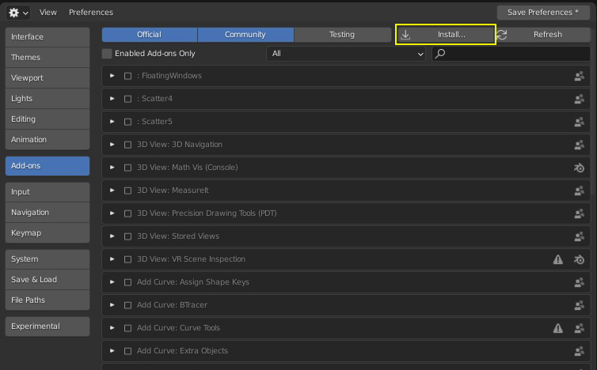

s


Watch this video if you'd prefer to watch a video tutorial about the installation process
Get your hands on our plugin
You just got your hands on your very own copy on Geo-Scatter. Congratulation, and thank you. Your financial support is directly helping improving the plugin, this couldn't be done without you! Please remember that all authorized redistributors are listed here. Any other sources are breaking our tradermarks and the terms of uses of our nodegroup engine and are therefore illegal.
If you never used the blendermarket before, you might wonder where you can
download your purchases.
If it is the case, please
follow this
tutorial.
If you never installed a blender addon before, here are the steps to follow.
The first step to install any blender plugin is to make sure the plugin you are using is compatible with the version of blender you are using. Compatibility information about our plugins are available in the the changelog page.
Go into the blender preferences, either by clicking on Main Header>Edit>Preferences or by changing an editor type to 'preferences'.
Go to the 'Add-ons' category, and click on 'Install' to install a new addon.
Choose your addon file, in our case a 'GeoScatter.zip' file, when confirming, Blender will simply extract the files inside your addons folder
this folder is by default located inside User/username/Appdata/Roaming/Blender Foundation/Blender/X.XX/scripts/addons/ for Windows OS users ( consult the blender manual to find the addon path of your OS) this is a very important path that you should be able to locate on your computer. There will be a new folder added in this path named after our plugin that should contain an __init__.py file.
Search in your blender plugins and enable Geo-Scatter in your addons preferences. Next to the enable button there is a little arrow for opening the plugin preferences layout.
Don't forget to save your preferences, if not done automatically.
If it is your first time using our products you need to install
your first biome and preset scatpacks!
Scatpack files are archives containing Biomes or Presets, you can install them within our plugin directly.
Do you have a .scatpack file? If you never used our plugin before, you can get biomes scatpacks right here!
Go into our plugin manager interface ( by going in the Scatter N panel>Creation>Biome Scatter or by going into your blender preferences editor ), search for our plugin, and open our plugin manager interface.
In the preferences section, you will have the ability to install a .scatpack file, click on the "Install a Scatter Package" operator, and select your file.
Once a package has been installed, you will be able to refresh your biomes library to see the new elements available. Depending on your package you may see a new category in your library navigator, located in the left side panel.
Remember, a biome file combines a scattering preset with a 3d-object
coming from a .blend file.
When you scatter a biome, the plugin will search everywhere in your
biome library for the .blend file it needs, if not found, it will search
in your blender asset-browser library, if not found again, it will
search in the custom paths you can define!
In short, if the partner does not include a .blend in his scatpack, you will need to install your assets in your blender asset browser, or define a new environment path that leads to this library of objects.
If you are new to blender, here is how you can install any asset library!
In blende, Go in Preferences Editor/Filepaths/Asset libraries & Add this path to your asset libraries, a new library will be available in your asset browser editor, you'll be able to select it from the left menu drop down properties.
Your Scatter-library is stored independently from your Geo-Scatter plugin, here's how to access it.
When you install a .scatpack file, the plugin will unzip its content ( .biome , .preset , .jpeg , or .blend files ) to your "scatter library" folder located somewhere on your computer. By default, it will be located in Users\username\AppData\Roaming\Blender Foundation\Blender\data\scatter library\ however its location can be customized. In your Geo-Scatter plugin preferences you will be able to directly open the library in your file explorer at the correct location.
This library is yours to manage, the Geo-Scatter plugin will not remove files from your library automatically. There are multiple sub-folders in this library, all folders are used by our plugin. Find hereby an explanation each folders:
_biomes_ folder. This folder will contain all files related to your biomes, being .jpeg , .biome , .preset and potentially .blend if not stored in external locations. You are free to re-arrange the biomes category structure as the biome library interface will dynamically re-build itself depending on your library folder structure, just hit the refresh button afterward.
_presets_ folder. This folder will contain all the .preset text files, used by the scatter-preset operator. These files are accompanied by their .jpeg icons.
_bitmaps_ is a library of images accessible from the scatter-patterns interface. Feel free to add your own images that might be useful for creating interesting scattering pattern if you wish to.
_market_ is for the gallery of scatpack previews, fetched from the web. The _possessions_ is used to display a checkmark on the scatpack possessed by the user.
You can redefine your library path in the plugin manager.
In your Geo-Scatter manager preferences, choose a new correct library path.
save preferences, and restart blender.
Having installation issues? please read these Tips
If you can't install your plugin on your MacOS that's most likely because your safari browser automatically unzipped the downloaded .zip file, then you tried to re-zip the content manually. However, now the folder structure has changed, therefore blender is not recognizing the plugin ( a blender plugin is either a folder containing directly a __init__.py file, or a single .py file ). The large magority of installation error reports blender plugin developers recieve from MacOS customers comes from this issues. To resolve it, we'd suggest to learn how to download a .zip file within your web browser without automatically unzipping the download, otherwise, you won't be able to install most blender addons.
The vast majority of users reporting us installation issues, are from users using an unsupported version of blender with our plugin. Please read about our plugin compatibility information in the changelogs page. Because blender changes very quickly, you'll need to expect older plugins to break rather quickly. It is very important to respect the compatibility instruction of the plugin you are downloading, never assume that a plugin is compatible with any version of blender, this is a False assumption.
If you are encountering issues with our plugin, we might ask you to test our plugin on
a clean installation of blender, with no other plugins enabled.
Here's how you can create your own portable virgin
installation of blender: